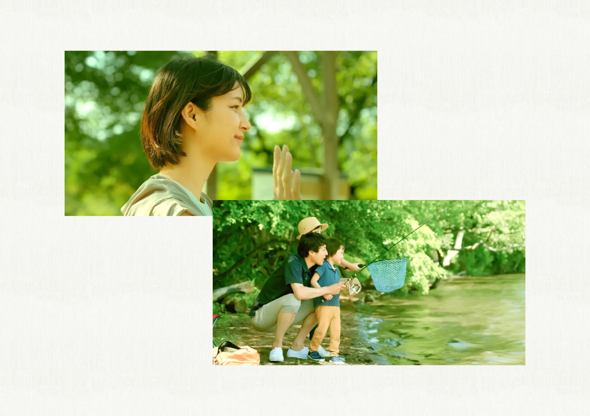
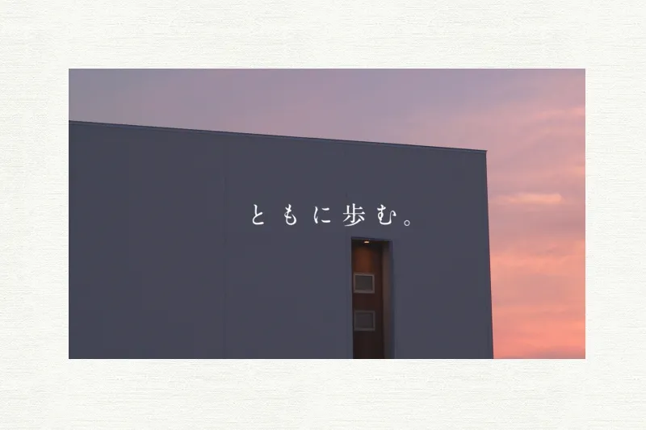
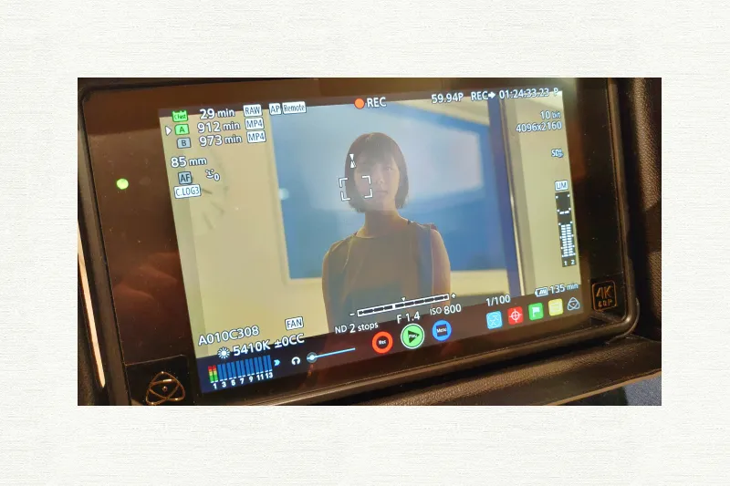

アユムホーム コンセプトムービー
歩調を合わせ
歩調を合わせ
お客さまによりそった家づくり
PROBLEM / 課題
ブランドの世界観を確立するための重要なコンセプトムービーでしたが、限られたリソースと予算の中では、映像のクオリティやインパクトを十分に引き出せない懸念がありました。特に、視聴者の印象を左右する登場人物のリアリティや空間の演出において、外部への発注が難しい中でいかにチープさを排除し、ブランドの魅力を最大化するかが大きな課題でした。
SOLUTION / 解決
予算不足を理由にクオリティを下げないよう、社内リソースをフル活用した制作体制を構築。自らスタイリスト兼進行管理として介入し、衣装や小道具の徹底した管理と調達を行いました。通常業務と並行しながら、撮影の数手先を読んだ緻密な準備を積み重ねることで、追加コストを最小限に抑えつつ、ブランドの想いが深く伝わるインパクトのある映像を実現しました。
DESIGN CONCEPT
戦略的なリソース調達とコスト管理
初めてのスタイリスト業務でしたが、社内メンバーの私物をリスト化して借りるなど、事前の情報収集を徹底しました。購入が必要なものは厳選してリスト化し、最小限の費用でブランドイメージに合致する世界観を構築。他案件と並行しながらも、先を見越した行動によって撮影現場の円滑な進行に貢献しました。

ディテールが支えるブランドの説得力
動画制作の裏側にある細かな調整を経験したことで、一つのビジュアルを完成させるための基盤作りの重要性を学びました。衣装一つひとつが住まう人のストーリーを語る重要な要素であることを意識し、現場の努力が映像の説得力に直結するという視点を得たことは、その後のあらゆる制作における大きな糧となっています。
